El último pueblo en pie
Comenta tu pueblo y tu provincia. Cada día caen catástrofes sobre España y el último pueblo que quede en pie gana.
Inscripciones abiertas
Cierran el jueves 26 a las 18:00
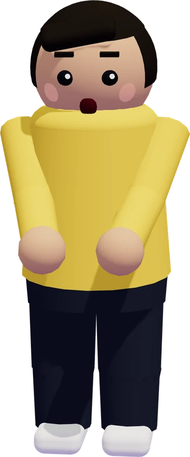
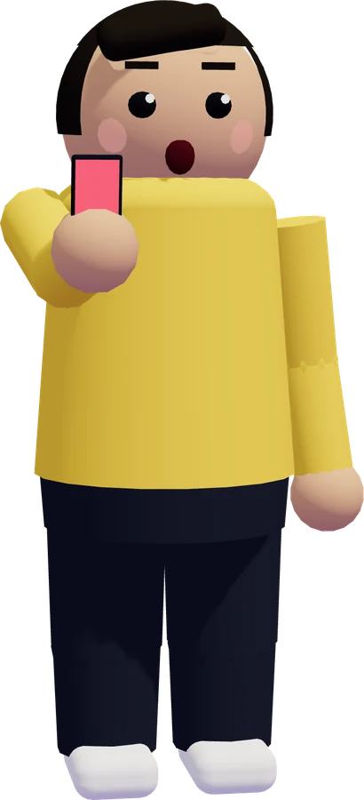
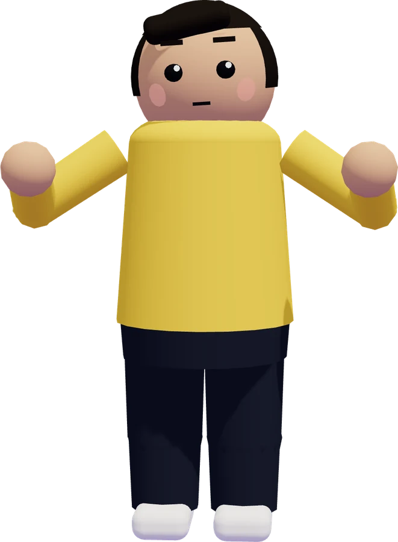
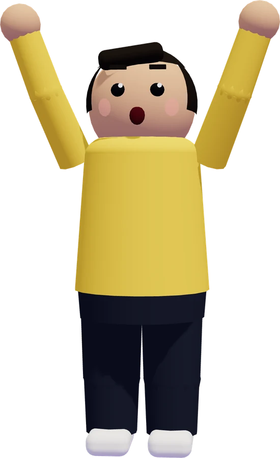
69.058 pueblos, aldeas y parroquias, una casita cada uno. Toca el mapa o escribe el tuyo.
Cargando el mapa…
Parte de catástrofes
El ranking de los pueblos
Cada euro es un punto: un tuneo suma 1, un apoyo de oro 3 y un vecino de honor 10. El n.º 1 sale con corona en los episodios.
- Cargando el ranking…
Vecinos de honor
Salen con su nombre en los agradecimientos del episodio. ¡Gracias!
Metas por provincia
Los puntos de todos sus pueblos suman para la provincia. Al llegar a una meta, se cumple en el episodio siguiente.
Todas las metas
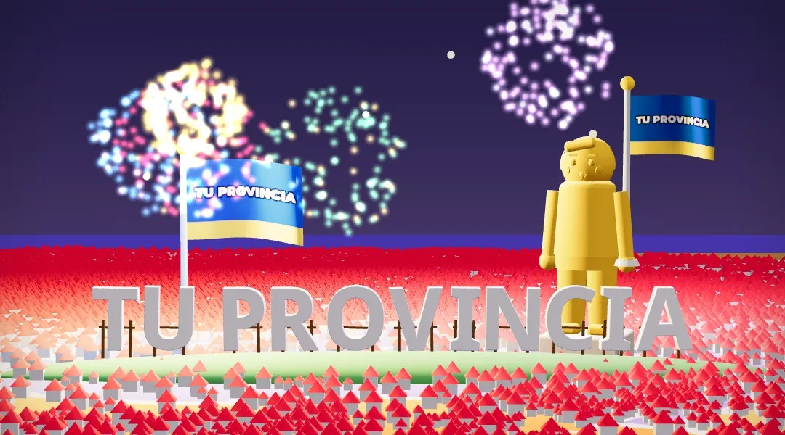
Lo que consigue una provincia con los puntos de todos sus pueblos. Lo conseguido antes de las 14:00 sale en el episodio de ese día.
Últimos apoyos
Niveles de casita
Los puntos no salvan a nadie: el sorteo es igual para todos.
Así se juega
El primer vídeo pasó de los 30.000 comentarios en un día, entre Instagram y TikTok.
-
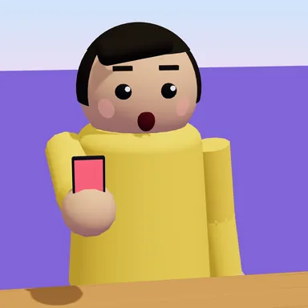
1Comenta tu pueblo y tu provincia
En cualquier vídeo del juego, en TikTok, Instagram o YouTube. Con un comentario basta. Tienes hasta el jueves 26 de noviembre a las 18:00.
-
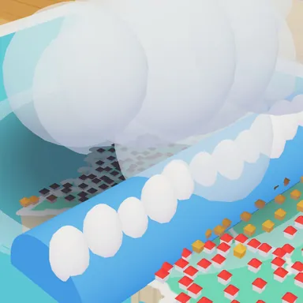
2Cada día cae una catástrofe
Tsunamis, terremotos, volcanes, meteoritos. Cada episodio borra del mapa un buen puñado de pueblos.
-
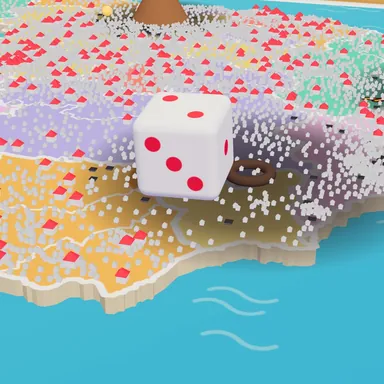
3Los pueblos caen al azar
Un sorteo decide a quién le toca. Da igual lo grande que sea tu pueblo o cuánta gente lo haya comentado.
-
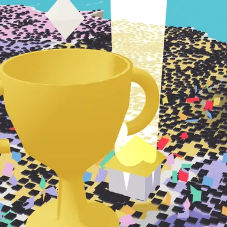
4El último en pie gana
El premio es un vídeo dedicado al pueblo ganador. No hay dinero de por medio.
Las reglas
- Juegan todos los pueblos de España: 69.058. Los 8.132 municipios y cada aldea, pedanía, parroquia, lugar o barrio con nombre propio del nomenclátor oficial, aunque tenga cuatro casas.
- Cada uno juega por su cuenta: si tu aldea está en el mapa, juega ella, no su municipio.
- Un pueblo comentado cien veces cuenta lo mismo que uno comentado una vez.
- Valen los comentarios de TikTok, Instagram y YouTube hechos antes del cierre.
- Cada día sale un episodio con los pueblos que caen.
- Gana el último pueblo que quede en pie.
¿Sabías que…?
Datos absurdos contados con muñecos en 3D. Estos son algunos de los más vistos.
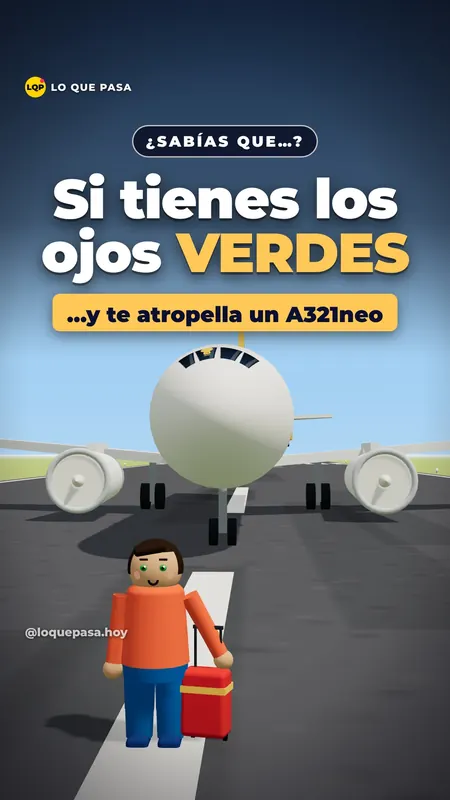
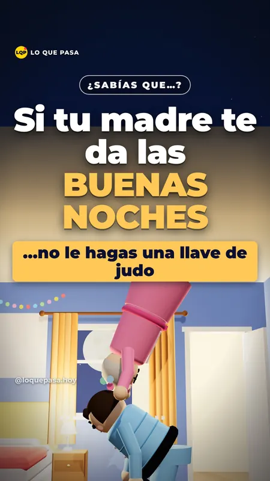

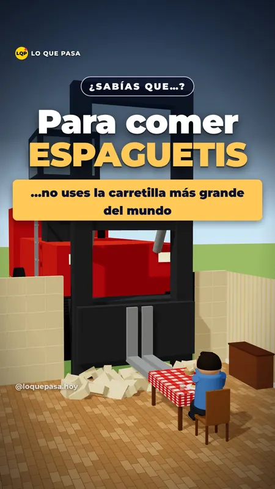

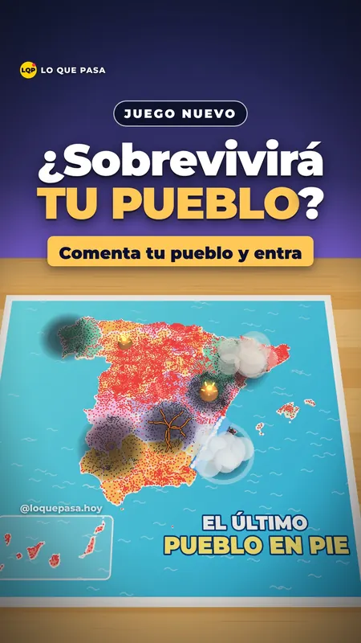

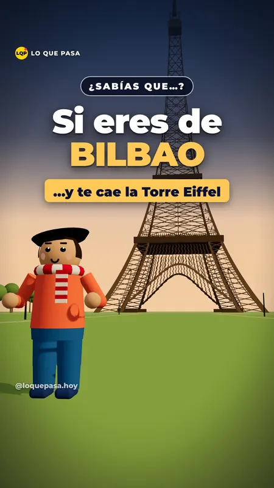
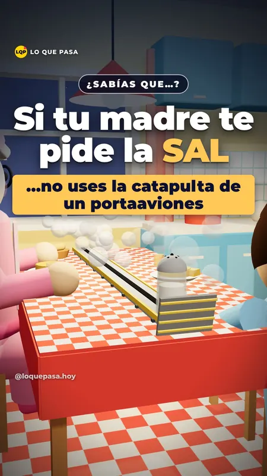
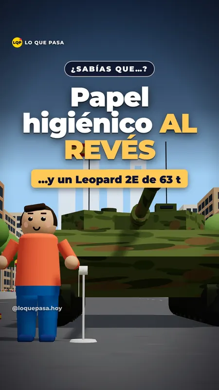
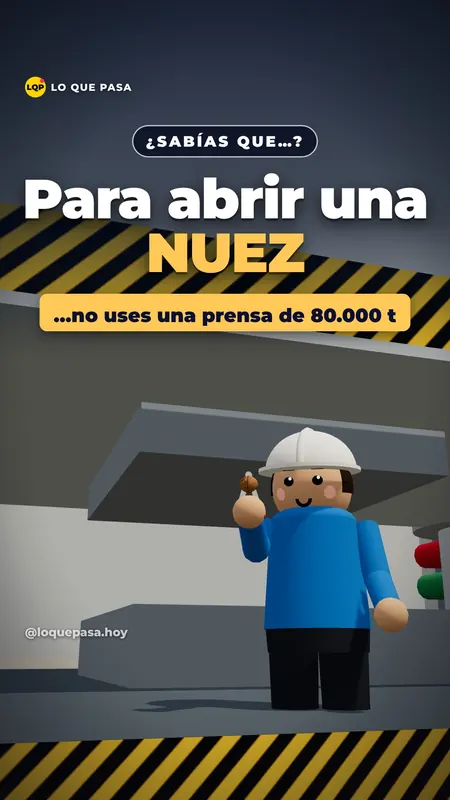
Cifras a 26 de noviembre de 2026.
La guía para hacer vídeos así
Ya está: el método tal cual lo uso, en un PDF de 27 páginas. Los cuatro formatos, las plantillas de guion, la voz con IA y los vídeos en 3D que me monta Claude.
25 € de lanzamiento hasta el domingo a las 23:59. Desde el lunes, 29 €.
Ver la guía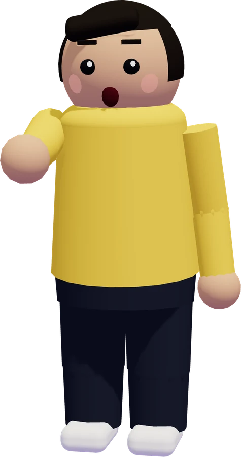
¿Tienes una marca?
Tu marca puede ser la protagonista del próximo vídeo. Vendas lo que vendas, le busco la comparación más absurda posible y la cuento con el humor de siempre.
El canal empezó el 11 de noviembre. Estas son las cifras de sus dos primeras semanas.
- Instagramreproducciones en 2 semanas
- 9,1 M
- TikTokvisualizaciones en 2 semanas
- 4,8 M
- YouTubevisualizaciones en 7 días
- 704,9 mil
- El vídeo más vistoen Instagram
- 4,8 M
- El último vídeoen TikTok
- 600 mil
Cifras de las estadísticas de cada red a 25 de noviembre de 2026.
Tunea tu pueblo o hazlo de oro
Apoyas el canal y tu pueblo luce en el mapa. Nada de esto le salva: si cae, cae con estilo.
- 1€
Tunea tu pueblo
1 € cada cosa: gorro de Papá Noel, nieve en el tejado, un árbol de Navidad, gafas de sol, una vaca… para la casita de tu pueblo. Cada tuneo es un voto y lleva lo que más se pida. Suma 1 punto en el ranking.
Muy pronto
- 3€
Pueblo de oro
3 € cada apoyo, 3 puntos en el ranking. Su casita brilla en el mapa y los apoyos se suman: un pueblo puede llevar uno o cuarenta.
Muy pronto
- 10€
Vecino de honor
Tu nombre y tu pueblo salen en los agradecimientos de un episodio, y tu pueblo suma un apoyo de oro y 10 puntos en el ranking.
Muy pronto
- 3€
Pack Navidad Nuevo
Luces, nieve en el tejado, árbol de Navidad y estrella para la casita de tu pueblo: 4 tuneos por 3 €. Suma 4 puntos en el ranking.
Muy pronto
- 1€
Flores para los caídos Nuevo
Si tu pueblo cae, no se acaba: déjale flores. Se ven junto a sus ruinas en el mapa y suman 1 punto para él y para su provincia.
Muy pronto
Metas por provincia Nuevas
Todo lo que compras suma también para tu provincia. Con los puntos de todos sus pueblos llegan la bandera, el saludo, la portada, su nombre en letras gigantes, fuegos artificiales, un vuelo por la provincia, una estatua de oro y hasta un episodio especial.
Ver todas las metas- 50€ cada uno
Negocios y ayuntamientos
«Episodio con el apoyo de…», un cartel con vuestro nombre sobre vuestro pueblo en el mapa y en el tablero de los episodios, y 50 puntos en el ranking por cada apoyo. El nombre lo revisamos antes de publicarlo.
Escríbeme
Todo en un solo pago. En la página de pago puedes subir la cantidad (tres vecinos de honor, cuatro apoyos de negocio…) y añadir más cosas para el mismo pueblo: oro, primer plano, el pack Navidad… Pagas una vez, y al canal le llega más, porque cada pago por separado se lleva su comisión.
Apoyar no cambia el sorteo. Los pueblos caen al azar, también el tuyo.
Los apoyos aparecen en el mapa en menos de 24 horas. Solo para mayores de 18 años.
Condiciones de los apoyos
- Qué compras. Tuneo: 1 € cada uno, IVA incluido. Es un adorno para la casita de un pueblo en este mapa (gorro, gafas, luces, una vaca…). Pueblo de oro: 3 € por apoyo, IVA incluido. La casita de tu pueblo se ve dorada en este mapa. Vecino de honor: 10 €, IVA incluido. Tu nombre y tu pueblo salen en los agradecimientos de un episodio del juego, y tu pueblo suma un apoyo de oro.
- Ranking. Cada euro es un punto para el pueblo que eliges: tuneo 1, pueblo de oro 3, vecino de honor 10, flores 1 y negocio 50; los packs dan un poco más (pack de 5 tuneos, 5; pack de 3 oros, 9; pack Navidad, 4). A igualdad de puntos, va delante el que llegó antes. El ranking no cambia el sorteo ni tiene premios: el n.º 1 sale con corona en los episodios.
- Lo que no compras. Ninguna ventaja en el juego: el sorteo no cambia y no hay premios. El paraguas no para meteoritos y el flotador no salva de ningún tsunami.
- Tuneos. Cada tuneo es un voto. En la cabeza, la casita lleva lo más votado: gorro, corona, boina, cigüeña, paraguas, limón o estrella (si empatan, el que va antes en la tienda). Gafas, bigote, luces, flotador, vaca, nieve y árbol los lleva en cuanto tienen un voto. Cualquiera puede tunear cualquier pueblo.
- Packs y primer plano. Pack de 5 tuneos: 4 €, son 5 votos para la cosa que elijas (5 puntos). Pack de 3 oros: 8 €, son 3 apoyos de oro (9 puntos). Pack Navidad: 3 €, son 4 tuneos, un voto para cada uno: luces, nieve en el tejado, árbol de Navidad y estrella (4 puntos). Primer plano: 5 €, tu pueblo sale de cerca y con su nombre en un episodio (5 puntos); hay 10 huecos por episodio, lo pagado antes de las 14:00 va al de ese día y, si está lleno, al siguiente con hueco. Si tu pueblo cae antes, su primer plano es su caída. Nada de esto cambia el sorteo.
- Varias cosas en un pago. En la página de pago puedes cambiar la cantidad y añadir otras cosas de la tienda para el mismo pueblo. Cada una cuenta igual que si la compraras por separado: tres vecinos de honor son 30 puntos y el nombre sale «×3»; varios primeros planos, en episodios seguidos. Si añades un vecino de honor, pon el nombre en la casilla «nombre para los créditos».
- Negocios y ayuntamientos. 50 € cada apoyo, IVA incluido: el cartel con vuestro nombre sobre vuestro pueblo en este mapa y en el tablero de los episodios, «con el apoyo de…» en el siguiente episodio con hueco (es un patrocinio y se dice así) y 50 puntos por cada apoyo, para el pueblo y su provincia. El nombre lo revisamos antes de publicarlo: el de vuestro negocio o ayuntamiento, sí; marcas de otros o nombres ofensivos, no (si no se puede publicar, os escribimos o os devolvemos el dinero). Para algo más grande, escribidnos.
- Flores. 1 € cada ramo, para los pueblos que ya han caído. Se ven junto a sus ruinas en este mapa y en el tablero de los episodios, y suman 1 punto para el pueblo y para su provincia. No lo devuelven al juego.
- Metas por provincia. Los puntos de todos los pueblos de una provincia suman para ella. A los 25 puntos, su bandera ondea en el mapa de los episodios; a los 50, saludo a toda la provincia en la voz de un episodio; a los 100, sale en la portada de un episodio; a los 200, su nombre en letras gigantes, como el cartel de Hollywood, en el tablero de todos los episodios; a los 300, fuegos artificiales sobre la provincia en un episodio; a los 500, la cámara sobrevuela la provincia en un episodio, con los nombres de sus pueblos con más puntos; a los 750, una estatua de oro gigante en la provincia, en todos los episodios; a los 1.000, un episodio especial dedicado a la provincia, y desde ahí, cada 500 puntos más, otra ronda de fuegos artificiales y otro saludo en la voz. Se cumplen en el episodio siguiente a llegar (lo conseguido antes de las 14:00, hora de Madrid, en el de ese mismo día); el episodio especial, en los días siguientes. Las metas no protegen a nadie: si una catástrofe pasa por encima de las letras o de la estatua, caen como todo lo demás, y el sorteo no cambia.
- Plazos. El oro y los tuneos aparecen en menos de 24 horas. El nombre sale en el siguiente episodio que tenga sitio en los agradecimientos.
- Nombres. Hasta 30 caracteres. No se publican nombres ofensivos ni nombres o marcas de otras personas sin su permiso (el de tu propio negocio, sí). Si el tuyo no se puede publicar, te escribimos para cambiarlo o te devolvemos el dinero.
- Pago. Se hace en Stripe, que actúa como vendedor y te envía el justificante. Esta web no ve ni guarda tus datos de pago.
- Devoluciones. Si cambias de idea antes de que tu apoyo salga en la web o en un vídeo, escríbenos y te devolvemos el dinero.
- Contacto. Por mensaje en Instagram.